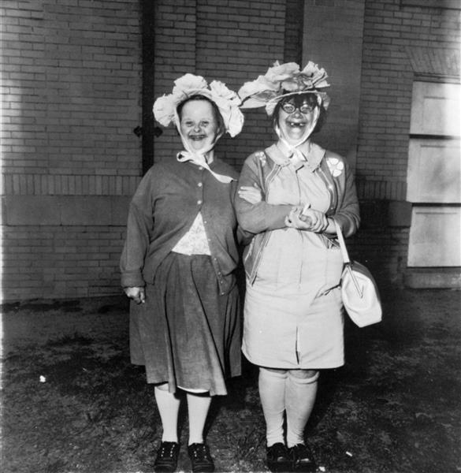
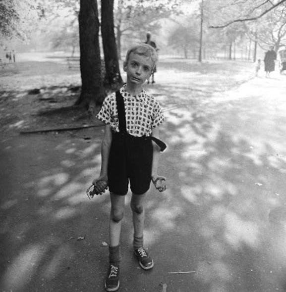
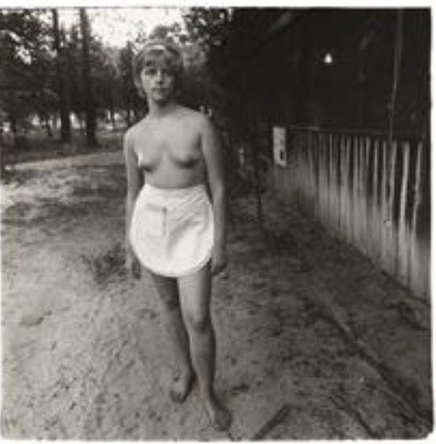
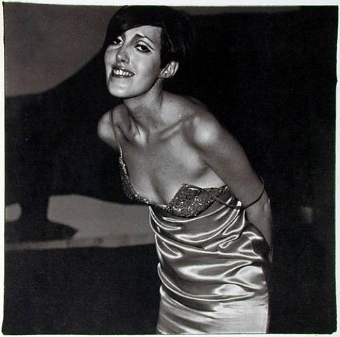
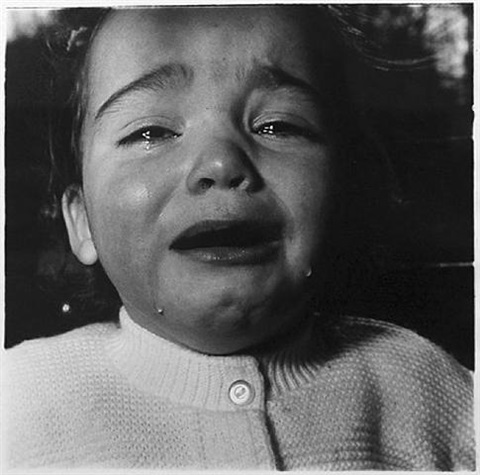
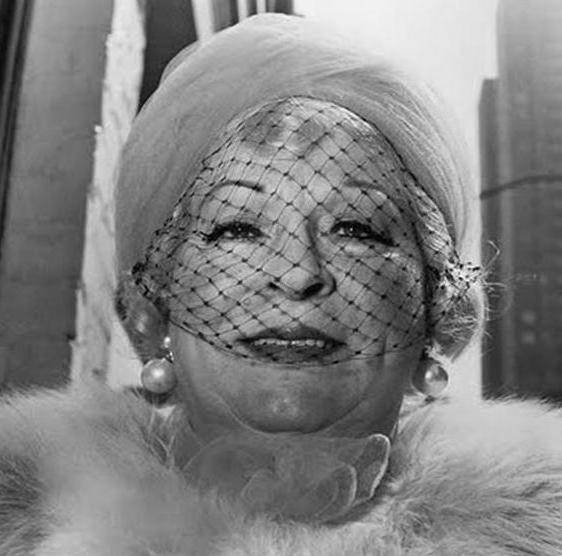

Freak Gallery

Art makes us accept painful, embarrassing and horrifying things.

Looking straight into the camera often makes people look even odder, almost deranged.

Do photographed people know they are freak? Seems they don’t. Camera makes normal“abnormal”.

They always show off themselves, expressing their feelings. No decisive moments because all moments matter.

Two photographs are of crying babies; the babies look disturbed, crazy.

Art makes us accept painful, embarrassing and horrifying things.